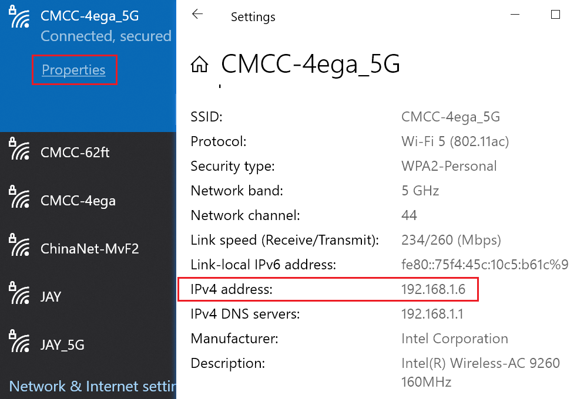
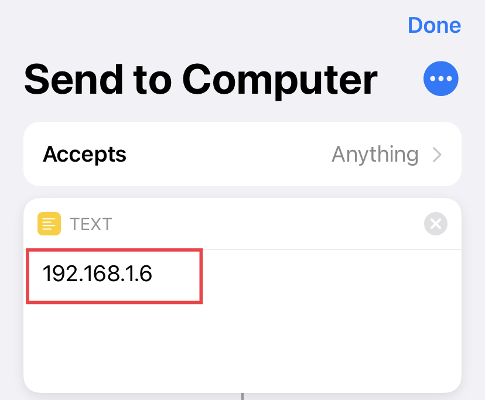
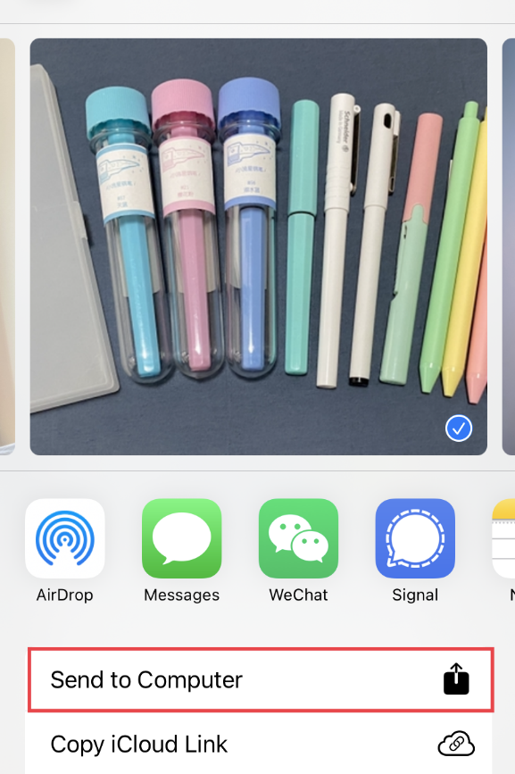
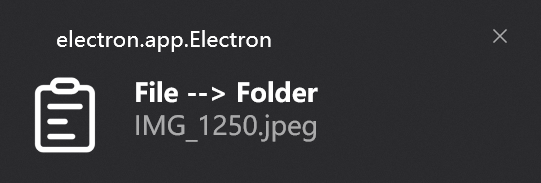

1 Get computer lan address

2 Set shortcut
2.1 get shortcut
2.2 set computer ip in shortcut

3 Send photo
3.1 find shortcut in share menu

3.2 click notification to jump to picture folder

Tips
- Make sure your devices are in same LAN.
-
AutoStart: put a shortcut in startup folder.
C:\Users\%USERNAME%\AppData\Roaming\Microsoft\Windows\Start Menu\Programs\Startup